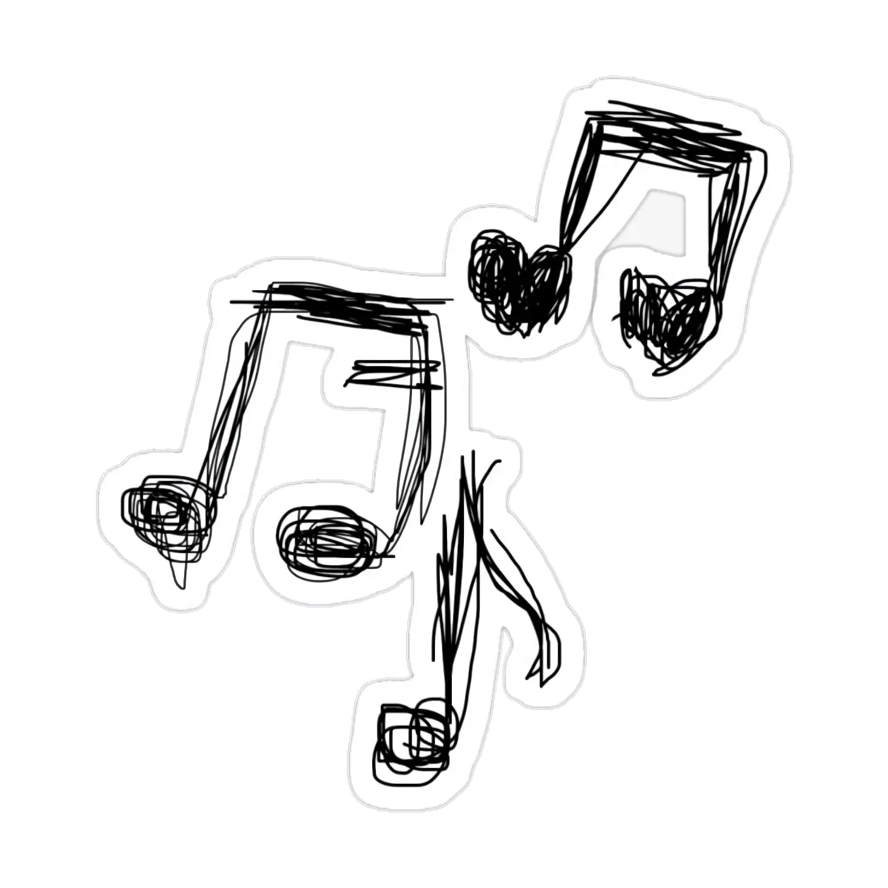
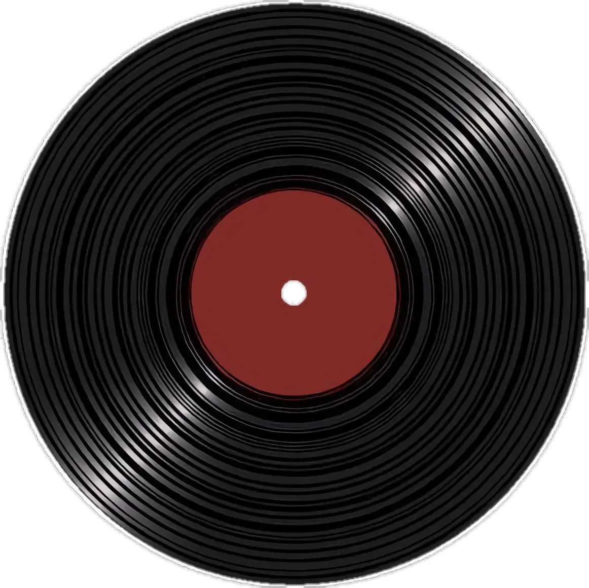
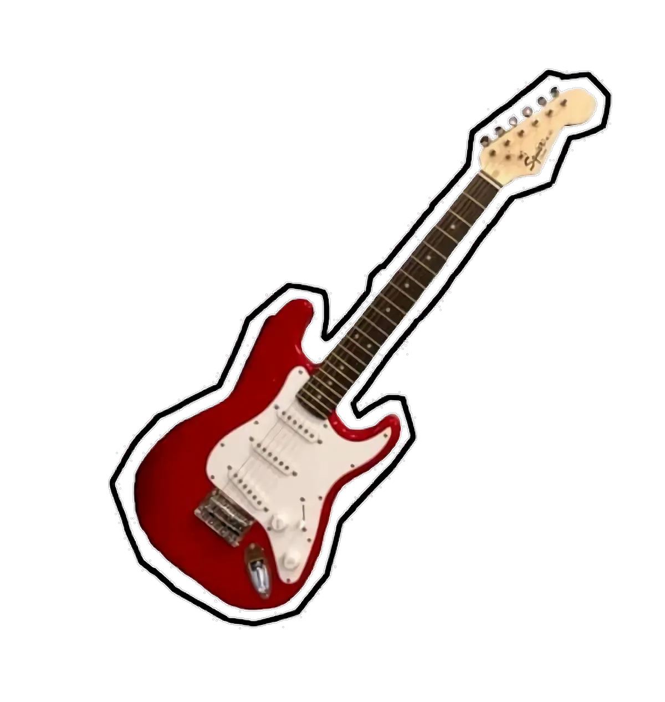
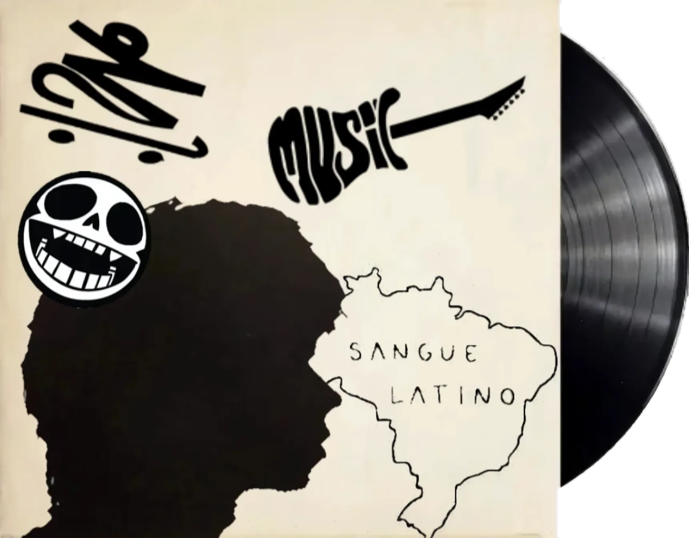

sons que habitam o tempo

composição & expressão
Esta seção reúne o som como linguagem da nota mais tímida ao acorde mais ousado. Aqui a música é tratada como poesia sonora: cada faixa carrega um tempo, uma emoção, uma história que palavras sozinhas não conseguiriam contar.
Você encontrará dois universos distintos: as músicas autorais, criadas por quem faz parte desta revista, e as músicas conhecidas, obras de artistas que marcaram a história e que seguem inspirando ouvidos até hoje.